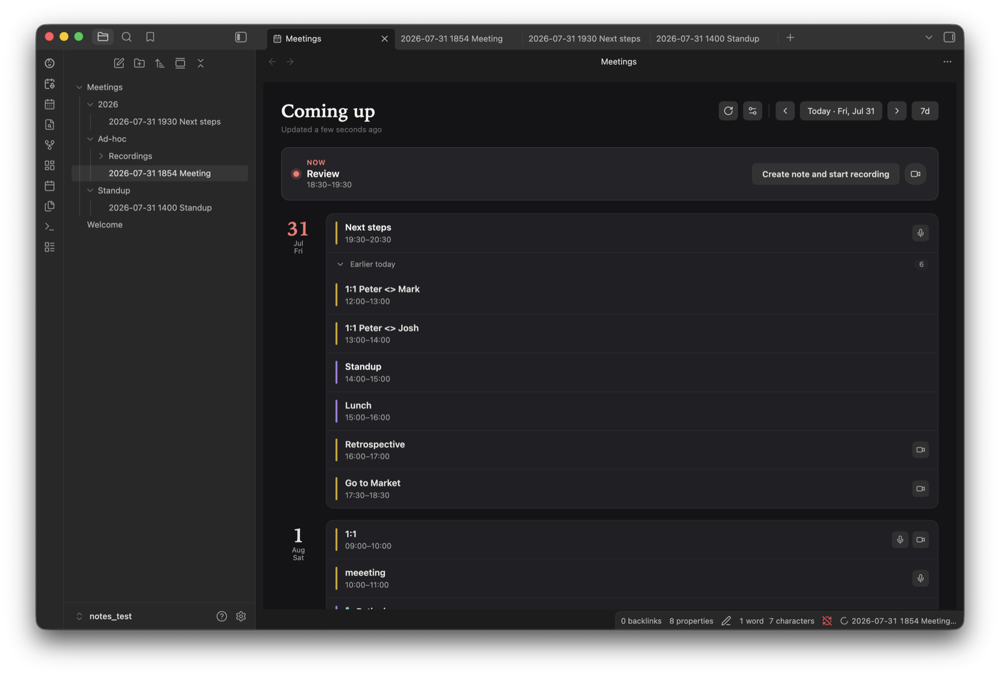
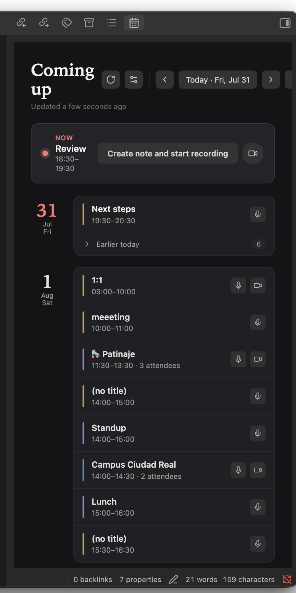
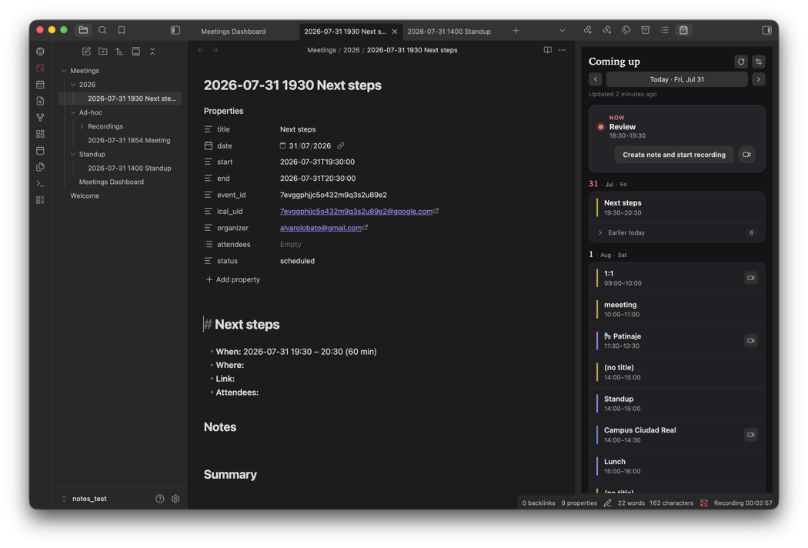
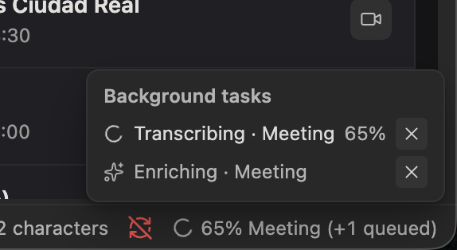
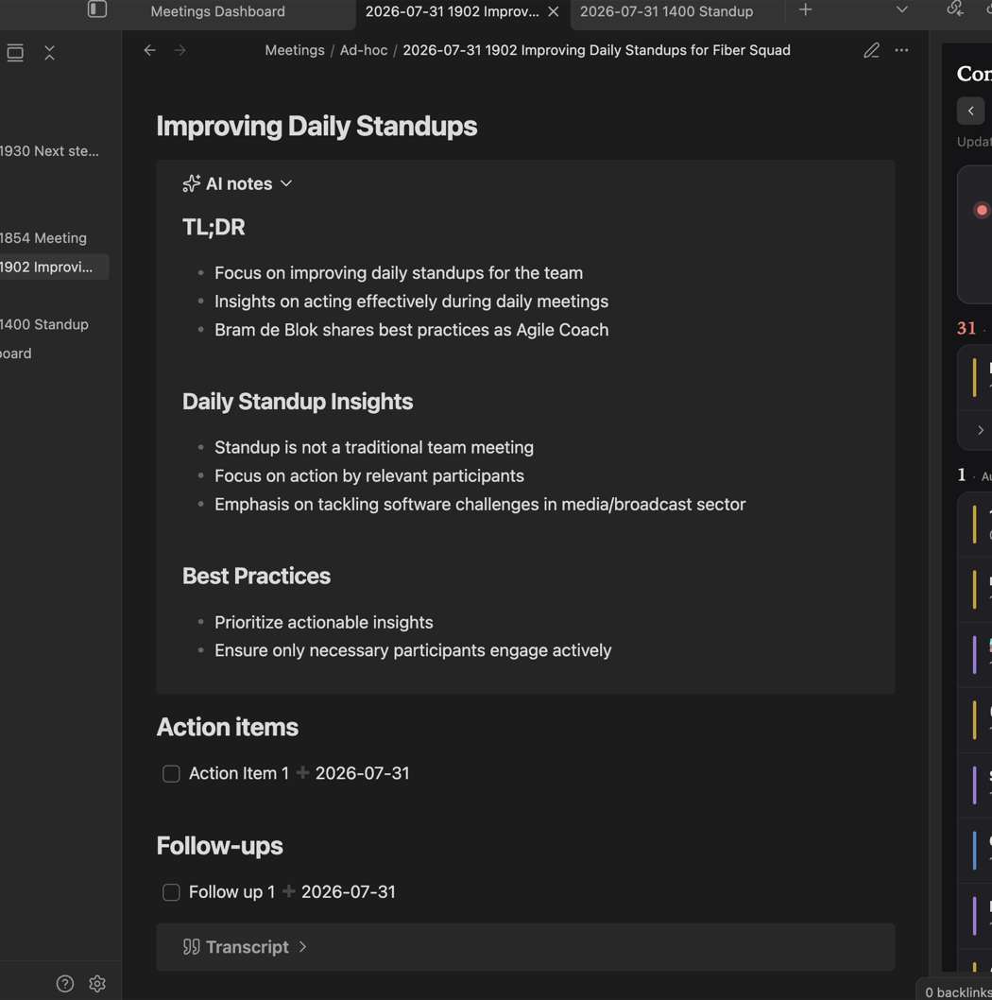
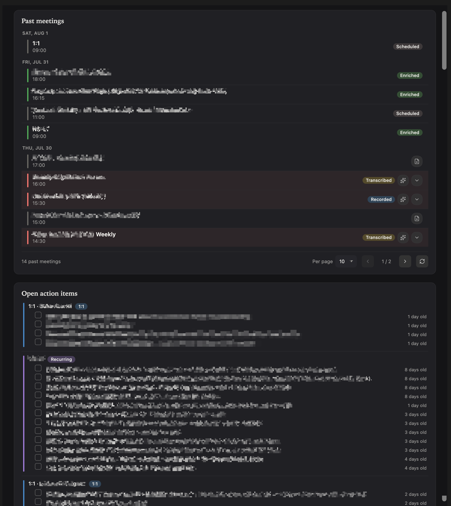

Meeting Copilot
Your meetings, captured in Obsidian.
Meeting Copilot is a free, open-source plugin for the Obsidian note-taking app on macOS. It records both sides of a meeting, transcribes the audio — on-device or via an endpoint you choose — and drafts an AI summary, all inside your own Obsidian vault. If you connect Google Calendar, Meeting Copilot requests read-only access solely to show your upcoming events inside Obsidian and automatically create a note for each one; it never creates, edits, or deletes anything on your calendar, and you can revoke access at any time.
Free & open source · Runs locally

Everything a meeting note needs
From the moment an event lands on your calendar to a searchable, summarized note in your vault — without leaving Obsidian.
Google Calendar sync
An agenda sidebar, auto-created meeting notes, and start/stop prompts around each event. Read-only — never edits your calendar.
Dual-channel recording
System audio and microphone captured on separate tracks, so you and everyone else stay cleanly labeled.
Flexible transcription
On-device Whisper (audio never leaves your Mac) or any OpenAI-compatible endpoint you control, with speaker separation.
AI summaries & actions
Draft a summary, decisions, and action items from the transcript — with action items liftable into your task manager.
Dashboard & retention
A generated meetings dashboard rolls up your notes, and recordings auto-prune once a transcript is safely saved.
Local & private
No Meeting Copilot server exists. Everything lives in your Obsidian vault on your device.
Your agenda, always in reach
Connect Google Calendar once and your upcoming meetings appear in a sidebar inside Obsidian. Each event can become a structured note, and you're nudged right when a meeting begins.
- Agenda sidebar with look-ahead / look-back windows
- One click to create a note and start recording
- Start / end prompts — in-app when Obsidian is frontmost, native macOS notification otherwise
- Skips declined meetings; filter out noise with exclusion keywords
- Read-only access — the plugin never writes to your calendar

Both sides of the conversation
A lightweight macOS helper captures system audio and your microphone as separate channels, so the transcript can tell you apart from everyone else — no virtual cables or extra apps.
- Separate “me” and “them” tracks for clean speaker labels
- Ribbon button for instant ad-hoc recordings
- Modern Core Audio process tap, with a fallback for older macOS
- Compact 24 kHz audio, saved as WAV or AAC

On-device or remote — your call
Run Whisper locally so audio never leaves your Mac, or point Meeting Copilot at any OpenAI-compatible endpoint with your own key. Either way you get accurate, speaker-aware transcripts.
- On-device Whisper models, downloaded once and checksum-verified
- Remote engines (OpenAI, LiteLLM, …) for the fastest, highest-accuracy models
- Speaker separation labels you vs. others
- Language selection, custom dictionary, and auto-transcribe on stop
- Optional fallback endpoint if the primary is unavailable

From transcript to takeaways
Turn a raw transcript into a usable note: a concise summary, the decisions made, and clear next steps — using the model and prompt you choose. Enrichment can run automatically after each transcription.
- Summary, decisions, and action items drafted for you
- Lift action items into checkboxes for the Tasks plugin
- Bring your own model and customize the enrichment prompt
- Auto-enrich after transcription, or on demand

Notes that file themselves
Meeting Copilot keeps your vault tidy: folder templates route one-offs, recurring series, 1:1s, and ad-hoc meetings to the right place, and a dashboard gives you one view of everything.
- Folder templates for one-off, series, 1:1, and ad-hoc meetings
- Customizable note title patterns and templates
- Generated meetings dashboard (pairs well with Dataview)
- Retention trims old recordings — only after a transcript is saved

How it works
Four steps from calendar invite to a finished note.
Connect your calendar
Authenticate with Google once. Meeting Copilot reads your upcoming events, read-only.
Record the meeting
Start from the agenda or the ribbon. Both audio channels are captured locally.
Transcribe
Whisper runs on your Mac, or your configured endpoint transcribes — with speaker labels.
Summarize & file
AI enrichment drafts a summary and action items straight into your Obsidian note.
Requirements
Meeting Copilot is a macOS-only desktop plugin — the recorder taps system audio natively.
macOS 13.3+
Apple Silicon. System-audio capture uses a modern Core Audio process tap (with a fallback on older releases).
Obsidian Desktop
Version 1.8.7 or newer, on macOS. The plugin is desktop-only.
Google account
Optional — only if you want calendar sync. Read-only access, revocable anytime.
An AI endpoint
Optional — for remote transcription or AI summaries. Skip it entirely with on-device Whisper.
Install
Two ways to get it. The helper that records system audio downloads automatically on first use.
BRAT (recommended)
Install the BRAT plugin, then add this repository:
BRAT keeps you on the latest release automatically.
Manual
Download main.js, manifest.json, and styles.css from the latest release into:
Then enable the plugin and grant the macOS permission prompts on first recording.
Optional companions: Dataview (dashboard) and Tasks (action-item tracking).
Questions
Is my data private?
Yes. There's no Meeting Copilot server. Notes, recordings, and your Google login token stay on your device, and the plugin talks only to Google's official APIs and any AI endpoint you configure yourself. See the Privacy Policy.
Does transcription need the internet?
No. On-device Whisper runs entirely on your Mac and never uploads audio. You can also choose a remote endpoint if you prefer the fastest cloud models — that choice is yours.
Do I need an API key?
Only for remote transcription or AI summaries. If you use on-device Whisper and skip enrichment, no key or account is required.
Does it work on Windows or Linux?
Not currently. The recorder captures system audio using macOS-specific APIs, so Meeting Copilot is macOS-only for now.
Is it free?
Yes — Meeting Copilot is free and open source. Any cost would come only from a cloud AI endpoint you choose to use.